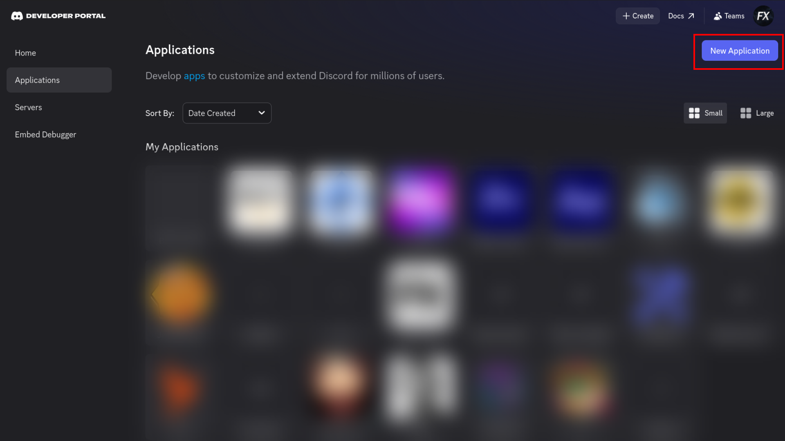
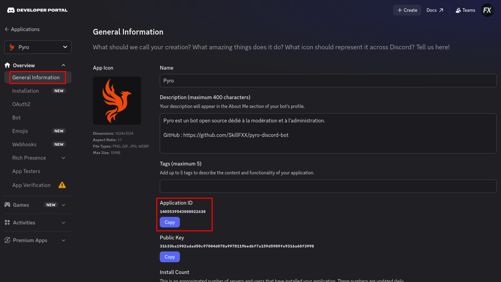
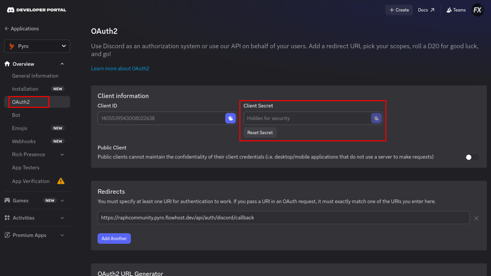
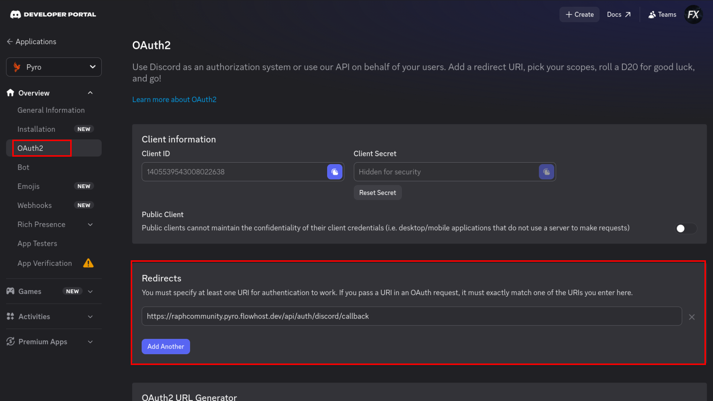
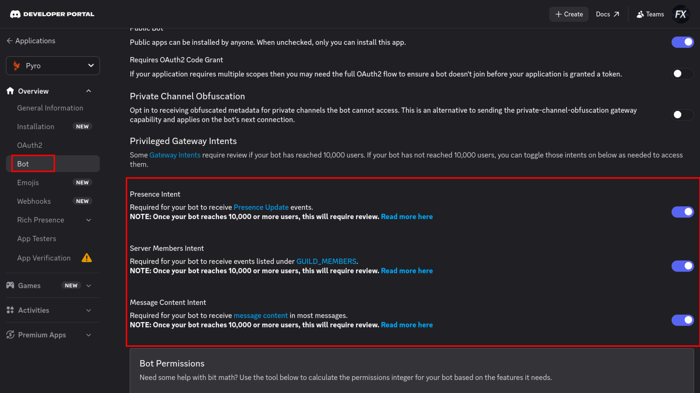
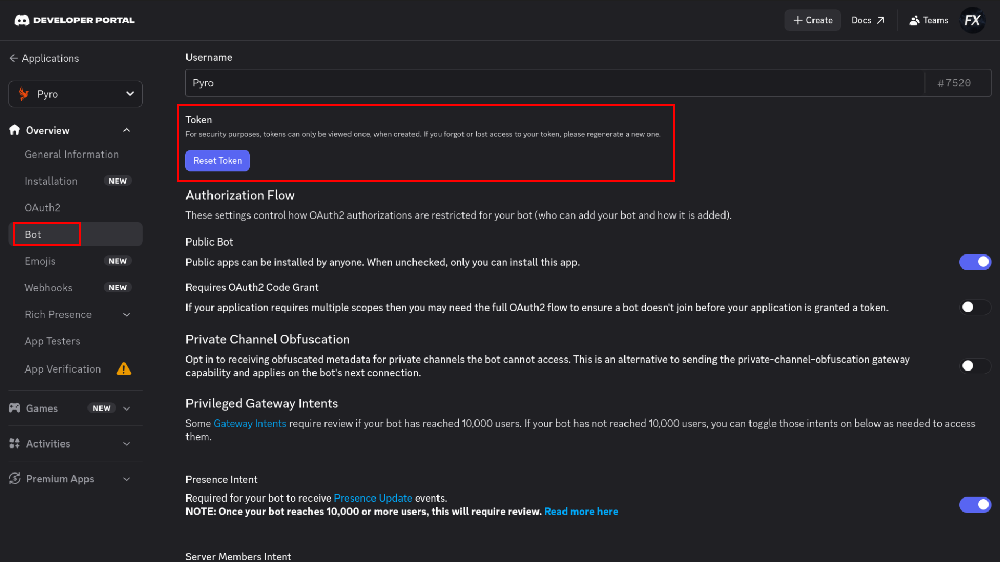
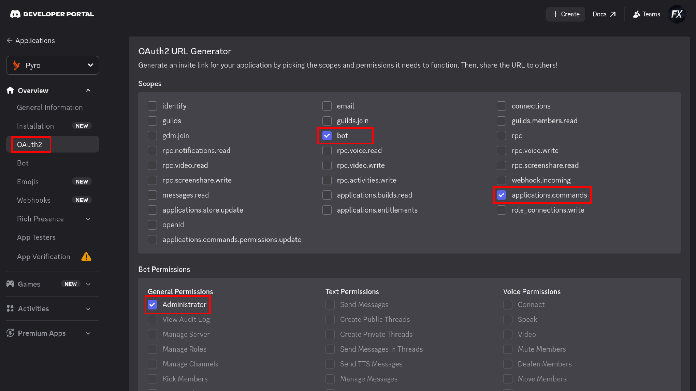

Ce guide illustré pas-à-pas vous accompagne pour créer votre instance sur le Discord Developer Portal, puis vous explique comment déployer Pyro sur votre propre machine ou confier son hébergement infogéré à FlowHost (10€/an).
Que vous choisissiez l'hébergement clé-en-main FlowHost ou l'auto-hébergement autonome, vous devez impérativement créer l'application de votre bot sur Discord. C'est ce qui garantit que vous êtes le propriétaire légitime de votre bot et de ses autorisations.
Connectez-vous sur le portail développeur : discord.com/developers/applications. En haut à droite de l'écran, cliquez sur le bouton bleu « New Application ». Donnez un nom à votre application (ex: Pyro) et cochez l'acceptation des conditions d'utilisation Discord.

CLIENT_ID)
Dans le menu latéral gauche, rendez-vous dans l'onglet « General Information ».
Repérez la ligne « Application ID » puis cliquez sur le bouton « Copy ».
Conservez cet identifiant numérique, il correspond à la variable CLIENT_ID.

DISCORD_CLIENT_SECRET)Dans le menu de gauche, cliquez sur « OAuth2 » > « General ». Sous la section « Client Secret », cliquez sur « Reset Secret » puis confirmez. Copiez immédiatement la clé secrète affichée et stockez-la en lieu sûr (elle ne sera plus visible par la suite).

Toujours dans l'onglet « OAuth2 », descendez jusqu'à la section « Redirects ». Cliquez sur « Add Redirect » et collez l'URL de connexion du dashboard :
http://localhost:3000/api/auth/discord/callback
(Si vous passez par l'hébergement FlowHost, renseignez l'URL personnalisée qui vous a été transmise lors de votre souscription).
Important : Cliquez impérativement sur le bouton vert « Save Changes » en bas à droite pour enregistrer.

Dans le menu de gauche, rendez-vous dans l'onglet « Bot ». Descendez sur la page jusqu'à la section « Privileged Gateway Intents ». Activez obligatoirement les 3 commutateurs :
Cliquez à nouveau sur « Save Changes » en bas de page pour enregistrer.

DISCORD_TOKEN)
Toujours dans l'onglet « Bot », remontez vers le haut sous le nom du bot.
Cliquez sur le bouton « Reset Token », confirmez l'action, puis cliquez sur « Copy ».
⚠️ Attention : Ce token est le mot de passe maître de votre bot. Ne le partagez jamais publiquement. Si vous choisissez FlowHost, transmettez-le uniquement en message privé sécurisé.

DISCORD_TOKEN.
Dans le menu latéral gauche, rendez-vous dans « OAuth2 » > « URL Generator » :
bot et applications.commands.
bot, applications.commands et Administrator, puis copiez le lien d'invitation.
Vous avez maintenant vos 3 identifiants (Token, Client ID, Client Secret). Deux possibilités s'offrent à vous :
Vous n'avez absolument rien à installer, aucun serveur à payer ni aucune ligne de commande à taper ! FlowHost déploie et maintient votre bot 24h/24 en France avec 99,9% de disponibilité garantie.
CLIENT_ID (récupéré à l'étape 2)DISCORD_CLIENT_SECRET (récupéré à l'étape 3)DISCORD_TOKEN (récupéré à l'étape 6)🚀 Votre bot sera activé en quelques minutes et vous recevrez votre lien d'accès direct au dashboard web !
Si vous possédez votre propre serveur VPS Linux ou conteneur, suivez les instructions ci-dessous pour initialiser le projet :
Clonez le code source et installez les paquets Node.js v20+ :
git clone https://github.com/SkillFXX/pyro-discord-bot.git
cd pyro-discord-bot
npm install
npm run build.envCréez le fichier .env avec vos identifiants récupérés lors des étapes précédentes (étape 2, étape 3, étape 6) :
DISCORD_TOKEN=votre_bot_token
CLIENT_ID=votre_client_id
GUILD_ID=votre_id_de_serveur
DISCORD_CLIENT_SECRET=votre_client_secret
DISCORD_REDIRECT_URI=http://localhost:3000/api/auth/discord/callback
PORT=3000
SESSION_SECRET=cle_secrete_aleatoire_securisee
COOKIE_SECURE=false
NODE_ENV=productionLancez le bot et le serveur web Express en simultané :
npm start
Votre tableau de bord sera directement disponible sur http://localhost:3000.
Pour souscrire à l'hébergement clé-en-main FlowHost (10€/an) ou poser vos questions sur l'installation de Pyro, contactez-moi directement :
Envoyez-moi un message privé pour une prise en charge rapide :
Pour vos demandes d'activation FlowHost, facturation ou questions techniques :